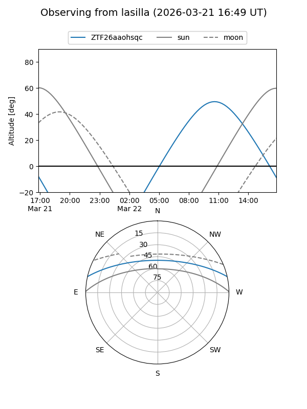
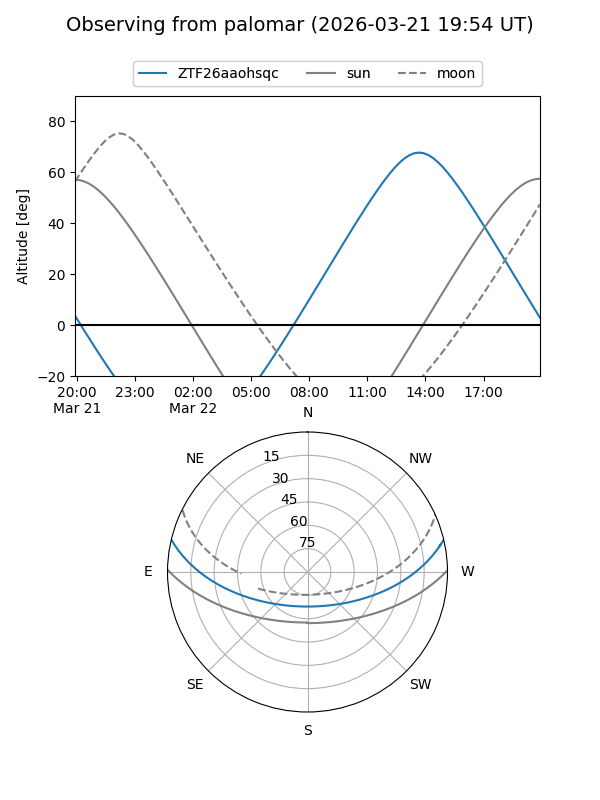

ZTF26aaohsqc
Target ZTF26aaohsqc at 2026-03-21 14:57
Aliases and brokers:
FINK: link
Lasair: link
ALeRCE: link
alt names
ZTF26aaohsqc (ztf,fink_ztf)
Coordinates:
equatorial (ra, dec) = 267.9236,+11.14321
equatorial (HMS+DMS) = 17:51:41.66,+11:08:35.54
galactic (l, b) = (36.3542,+18.25120)
Flags:
Photometry:
last ztfg=19.42
1 ztfg detections
Lightcurve
Visibility


Additional plots